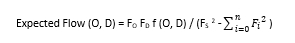

| Input your CSV flow file for analysis: |
|
| Result for your analysis: |
This tool will help you convert your polygon data in geoJSON or topoJSON to CSV file of polygon centroids.
Please input your JSON below:
Flow normalization helps remove the effect of total flow or population size by calculating the difference between the actual flow and the expected volume of flow for each pair of locations (nodes). We use an adjusted flow volume formula to calculate the expected number of flows between locations.
For more details in modularity function please refer to Guo (2009).

1. Please choose your flow file that contains three columns: origin, destination, and volume. Then click on Submit button.
2. Your flow file will be processed and returned back to you to download. The output file will include origin, destination, modularity, rawvolume and expectation columns. modularity column is the difference between observed flow (rawvolume) and expected flow (expectation) calculated based on the give formula.
3. Modularity values could be negative or positive. Negative values mean there are less observed flows, whereas positive values mean there are more observed flows than expected from an origin to a destination.
This is a testing tool to connect to the backend Java code, which will provide more complicated analysis tools for pre-processing your data before visualization.
Only for testing use! please input your file below:
Testing result:
Example data sets are available to download and visualize with FlowMapper in the following link: https://github.com/geo-social/flowmapper.
Version: 1.0.5
Developer: Geng Tian
Supervisor: Caglar Koylu
Citation: Please cite the reference below if you use FlowMapper in a manuscript:
Koylu, C., Tian, G., & Windsor, M. (2021) FlowMapper.org: Web-based and interactive framework for designing origin-destination flow maps
| Base Map: | |
|
|
|
| Base map opacity(%): | |
| Projection: | |
|
|
|
|
|
|
|
|
|
|
|
|
| Reference Field: | |
| Font size: | |
| Label radius: | |
| Label color: | |
| Opacity (%): | |
|
|
|
| Upload Polygon Data: | |
| Join CSV Data: | |
|
| |
| JSON ID Field: | |
| CSV ID Field: | |
| Map Field: | |
| Classification: | |
| Manual break setting: | |
| Color scheme: | |
| Min color: | |
| Max color: | |
| # of classes: | |
| Fill opacity (%): | |
| Stroke color: | |
| Stroke width: | |
| Legend title: | |
| Decimal places: | |
| Node Data: |
|
|
|
|
| # of classes: | |
| Manual breaks setting: | |
| Fill color: | |
| Min Color: | |
| Max Color: | |
| Fill: | |
| Fill opacity (%): | |
| Min radius: | |
| Max radius: | |
| Stroke color: | |
| Stroke width: | |
| Legend title: | |
| Decimal places: | |
| Flow Data: | |
| Origin ID: | |
| Destination ID: | |
| Volume: | |
| Show top flows: | |
| Style: | |
| Classification: | |
| # of classes: | |
| Color:
|
|
| Fill opacity (%): | |
| Min color: | |
| Max color: | |
| Min width: | |
| Max width: | |
| Stroke color: | |
| Stroke width: | |
| Legend title: | |
| Decimal places: | |
Error.
Please make sure the origin and destination IDs used in flow csv file exist in the node file. Please upload your files and select the matching ID columns.
Number of features:
Number of joint features:
Number of disjoint features: